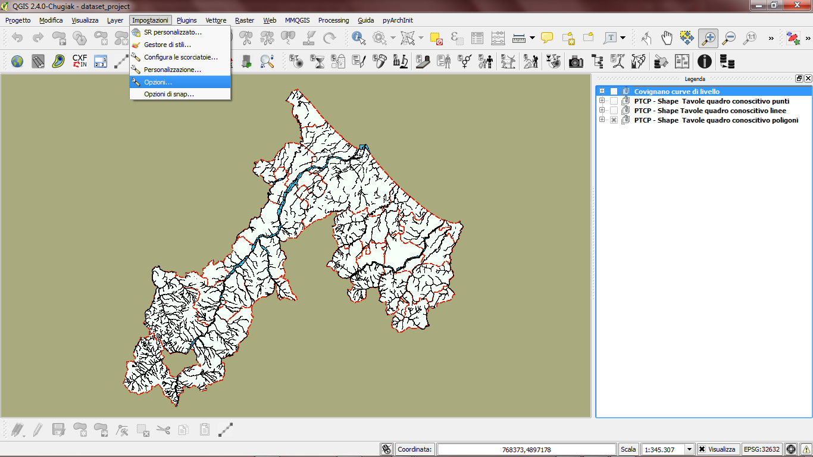
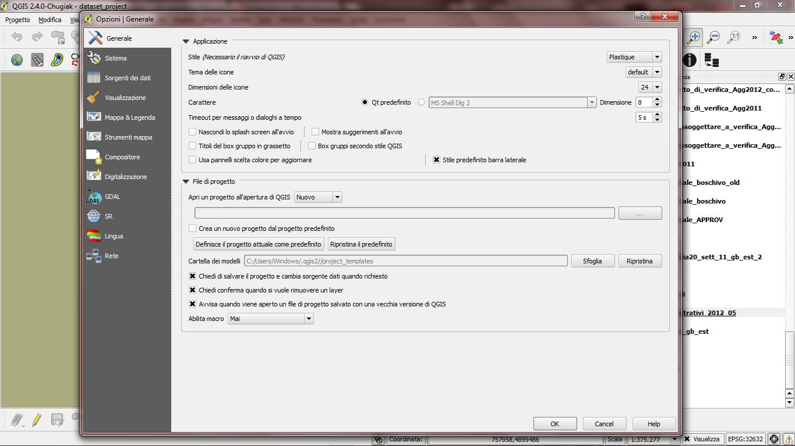
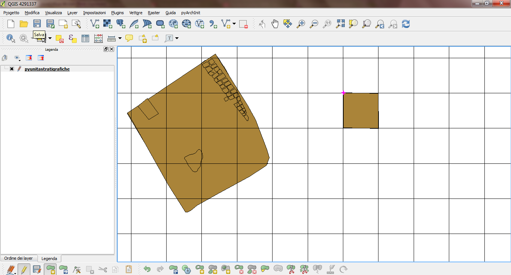

Panormamica generale¶
Piccola premessa¶
In breve per gli impazienti Il responsabile del corretto funzionamento di Qgis e della buona qualit? del tuo lavoro sei solo TU. Aiuta sempre a mantenere il software libero, diffonderlo e svilupparlo. Reinvesti quello che risparmi sulle licenze donando a: http://www.qgis.org/it/site/getinvolved/donations.html
Nel dettaglio ma non troppo¶
Qgis ? un Free Open Source Software Geografico, ovvero un software libero con il codice sorgente aperto per l’elaborazione di dati geografici. In particolare fate attenzione alla parola Free, che in inglese significa anche ?gratis?: qui ? usato nel senso comune di ?Libero?, quindi non ? mai da intendersi gratis. Verr? da chiedersi che differenza ci sia, dal momento che posso scaricarlo come e quando voglio dalla rete senza dovere nulla a nessuno. In realt? il costo sta proprio nel fatto che la libert? ha un prezzo, quindi se voglio poter continuare a scaricare il software, dovr? preoccuparmi che esso si sostenga nel tempo. Come ? possibile farlo? Impegnando sempre parte del proprio tempo nel partecipare attivamente con la comunit? di sviluppo, facendo segnalazioni quando si trovano dei ?bugs? (letteralmente dei bachi, qualcosa che non funziona), in modo che gli sviluppatori possano correggerlo; oppure potete fare delle donazioni per pagare sviluppi delle parti di software che vi servono e che hanno dei ?bugs? e che andranno a beneficio anche di altri.
Micro storia¶
Qgis nasce a met? degli anni 2000 come visualizzatore di dati geografici, e in breve tempo diventa un grandissimo aggregatore di funzioni provenienti da disparati software GIS che potrete comodamente usare direttamente dalla sua interfaccia. Inoltre nel tempo ha aumentato notevolmente delle funzioni interne per l’elaborazione dei dati, la loro visualizzazione e vestizione, nonch? la stampa. Grazie alla possibilit? di creare ?plugins? esterni in linguaggio C++ o python, intorno a Qgis si ? creata una grande community di programmatori, anche occasionali, che mettono a disposizione di tutti nuove funzioni non presente, che vengono integrate nella ?core? di Qgis una volta divenuti ?stabili? e ritenuti utili per la maggior parte degli utenti.
Come funziona questo manualetto¶
Fuori dal voler essere un manuale esaustivo, Quick Qgis, mira ad essere uno strumento agile e veloce per iniziare subito a lavorare con Qgis con le sue funzioni base. Qgis ? un software che pu? essere usato in infiniti modi a seconda delle proprie esigenze e non ha un funzionamento lineare ne unico per risolvere un singolo problema.
Quindi il manuale pu? essere letto in qualsiasi modo a seconda di quello che avete necessit? di fare. Se non c’? probabilmente siete degli utenti avanzati e vi consigliamo di leggere la documentazione ufficiale o di iscrivervi alla mailing list degli utenti.
CAPITOLO 1 - Le impostazioni generali di Qgis Come tutti i software, anche Qgis vi permette di settare alcuni parametri a livello generale che saranno salvati e mantenuti nelle successive sessioni di lavoro. Le singole opzioni selezionabili e il loro uso incrociato permettono di migliorare e velocizzare alcune fasi del vostro lavoro. Prima di tutto ? bene ricordarsi una cosa: alcune opzioni hanno effetto immediato, altre necessitano di un riavvio di Qgis, cosa segnalata nell’etichetta legata all’opzione. Di seguito passeremo in rassegna alcune opzioni che riteniamo (forse erroneamente) le pi? utili per un utilizzo immediato di Qgis.
Generale¶
Nel pannello Generale possiamo settare la modalit? di apertura di Qgis per quanto riguarda i progetti (per sapere come sia fatto un progetto di Qgis si veda il capitolo ?Il progetto?).
Nella sezione File di progetto ? possibile decidere se al prossimo avvio di Qgis si aprir? un nuovo progetto (opzione che consigliamo) lasciando ?Nuovo?. E’ possibile aprire l’ultimo progetto chiuso, selezionando ?Recente? oppure aprire un modello specifico; nell’ultimo caso dovrete selezionare una cartella che avrete precedentemente creato e in cui ? presente un modello di progetto Qgis preimpostato. Usatelo solo per redistribuire un modello particolare di progetto. Lasciate le successive opzioni come da figura. Sorgente dati opzioni di apri tabella attributi e copia geometria Nella sezione sorgente dati ? bene tenere all’inizio l’opzione ?Comportamento della tabella attributi? settato con ?Mostra tutti gli elementi?. In seguito, iniziando ad avere pi? dimestichezza con Qgis potrete sfruttare altre 2 opzioni interessanti: Mostra gli elementi selezionati: vi permette di visualizzare in tabella solo i dati delle geometrie selezionate a schermo Mostra gli elementi visibili nella mappa: questo, indipendentemente dalla selezione e dal numero di elementi presenti nel layer vettoriale, vi permetter? di leggere in tabella le informazioni delle geometrie visibili su Qgis in quel momento.

Visualizzazione¶
Per poter velocizzare i processi di visualizzazione e di lavoro della vostra base GIS sfruttate al meglio il processore settando come da figura le tre opzioni e dando come intervallo di aggiornamento della mappa 250 ms (millisecondi). Se la vostra macchina facesse fatica a visualizzare, provate ad aumentare leggermente l’intervallo a 350 / 400 ms.

Sezione digitalizzazione¶
Questa sezione ? fondamentale per poter velocizzare alcune operazioni che vengono eseguite durante la digitalizzazione o il data entry delle informazioni, oppure per le interrogazioni a video. Le prime due opzioni possono essere sfruttate in fase di digitalizzazione:
?Non aprire il modulo dopo la creazione di ogni geometria?: se spunterete questa opzione velocizzerete sensibilmente l’inserimento delle geometrie ma non avrete la possibilit? di riempire i campi legati alla geometria. Ottimo da utilizzare nel caso di layer con tabelle che devono essere: compilate successivamente compilate con valori ripetitivi compilate con valori che provengono da un record precedente Insieme all’opzione appena vista potrete sfruttare l’opzione ?Ripeti i valori degli attributi usati per ultimi? in questo modo: spuntate solo ?Ripeti i valori degli attributi usati per ultimi? poi inserite una geometria e riempite la tabella con i valori. In questo modo alla prossima digitalizzazione saranno ripetuti i medisimi attributi. Se non avete bisogno di inserire valori differenti che potete modificare al termine dell’inserimento dati oppure i valori da inserire sono sempre i medesimi, potrete sfruttare l’opzione sopradescritta ?Non aprire il modulo dopo la creazione di ogni geometria?, accendendola e spegnendola nel corso del lavoro a seconda dell’esigenza.

Elastico¶
Per elastico si intende la linea di preview che appare durante la digitalizzazione di linee e poligoni. Si consiglia di scegliere un colore tenue, in quanto per i poligoni, l’area che si va a digitalizzare viene campita al suo interno del medesimo colore comprendo in parte quanto vi ? sotto e rendendo difficile seguire i contorni. Snapping e Raggio di ricerca Tolleranza di snapping. Per snapping si intente la capacit? di un vertice di agganciarsi ad un altro vertice o ad un segmento. Qgis vi permette quattro livelli di snappig:
- nessun livello di snapping per un disegno a mano libera ma topologicamente non corretto
- tollerranza di snapping predefinita: lo snapping si attiver? per solo al di sotto di una certa soglia
- con tolleranze di snapping per i singoli layer (lo vedremo trattando della digitalizzazione) ma con la tollerenza generale non impostata
- tolleranza generale impostata sommata a tolleranze personalizzate per singoli layer
Dalla tendina di Modalit? di snapping predefinito potete scegliere se tenere lo snapping:
- spento
- attivo per i vertici
- attivo per i segmenti
- attivo per i vertici e segmenti
Se usate coordinate geografiche come la Gauss-boaga, andando a settare il numero nella casella accanto a Tolleranza di snapping predefinito, impostando il valore in Unit? di mappa otterete la sensibilit? dello snapping in termini metrici. Quindi, se la tolleranza predefinita fosse settata a 1,0000 significa che mentre digitalizzate, spostandovi col mouse, lo snapping si attiver? su tutti i vertici o segmenti nel raggio di 1 metro (Figura 6). Se vorrete invece digitalizzare basandovi su un Raster e quindi vorrete sapere a quanti pixel di distanza sta un oggetto settate Unit? di mappa su pixel.
Posizionando il cursore dove c’e’ la freccia azzurra, si attiva lo snap ad un metro (la x fucsia)
Il Raggio di ricerca ? utilizzato da Qgis per capire quali vertici si sta cercando di spostare durante la digitalizzazione. Anche in questo caso ? possibile lavorare in termini di Unit? di mappa o pixel.
Non esistono settaggi universali, tutto dipende da quale scala adotterete per digitalizzare. Quindi prima di iniziare la digitalizzazione vera e propria prendetevi qualche istante per fare delle prove e trovare il giusto mix di parametri. Segnateveli a parte quando troverete i valori corretti per un dato lavoro ad una certa scala in modo da non perdere tempo la prossima volta. Indicatore di vertice Scegliere se durante la digitalizzazione appariranno i vertici sottoforma di crocette o cerchietti trasparenti. Di solito una crocetta ? preferibile. Date una dimensione di 3/5 per l’indicatore, ma queto dipender? molto anche dalla scala alla quale lavorete.
SR: Sistemi di Riferimento (Spaziali)¶
Quello che c’? da sapere innanzitutto ? che il GIS ragiona in coordinate, ovvero da un punto di origine vengono emanate le coordinate che seguono cercte regole trigonometriche per ricreare su un piano la curvatura irregolare della superficie terrestre. Quindi ? fondamentale sapere in quale sistema di coordinate vorremo lavorare e come fare per impostare il nostro progetto. Nelle impostazioni generali ? possibile impostare alcuni parametri che ci faranno risparmiare tempo in seguito.
Sr predefinito per nuovi progetti¶
In questa sezione scegliamo come deve essere settato un nuovo progetto che pu?:
Non abilitare la riproiezione al volo: si usa nel caso avessimo layer informativi di un unico sistema di riferimento spaziale. Abilita automaticamente la riproiezione al volo se i layer hanno SR differente. Effettua sempre la riproiezione al volo: ogni nuovo layer caricato viene immeditamente riproiettato in base al sistema di riferimento scelto sotto.
Sr predefinito per nuovi layer: utilizzato quando si creano nuovi layer oppure se si caricano layer privi di SR Se sappiamo che il nostro progetto e i layer in arrivo sono i medesimi potremo settare direttamente il tutto con usa SR di progetto. Se avessimo pi? layer con SR differenti sar? meglio scegliere la prima opzione: Richiedi SR. Se invece dovessimo caricare vari layer con SR predefinito ma differente da quello di progetto usare l’opzione Usa come predefinito il SR visualizzato sotto e impostare l’SR.

*italics*Esempio di settaggio dei progetti e nuovi layer a livello generale